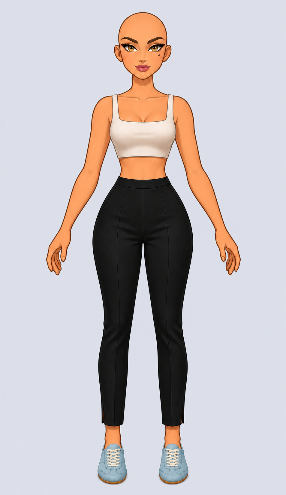
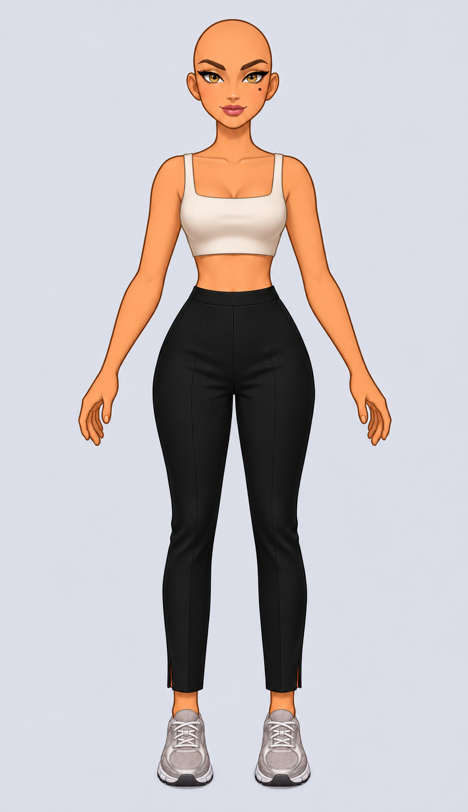
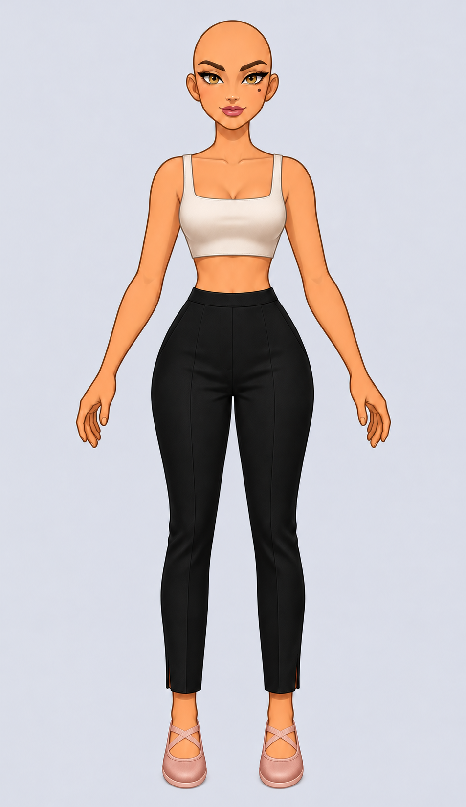
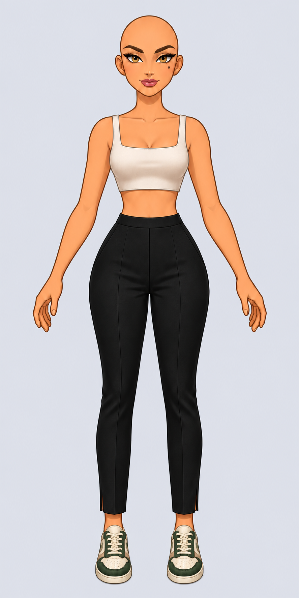
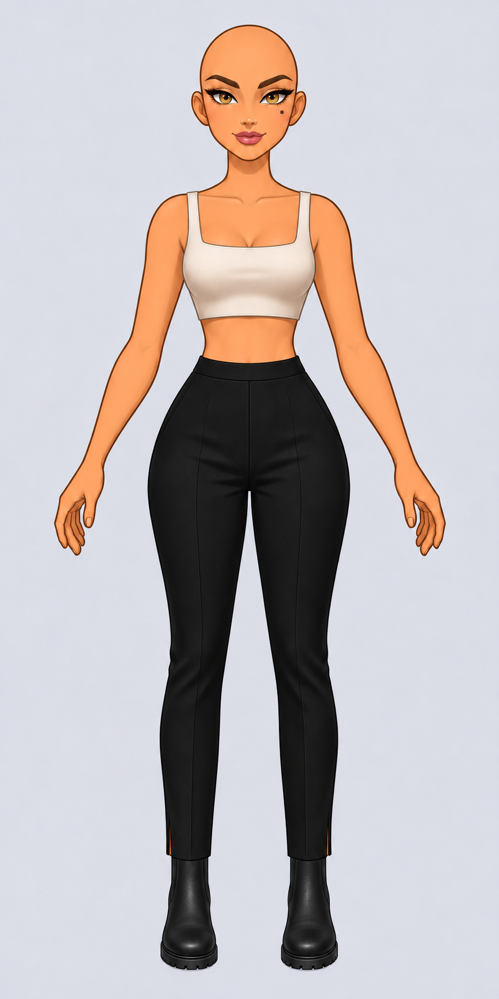
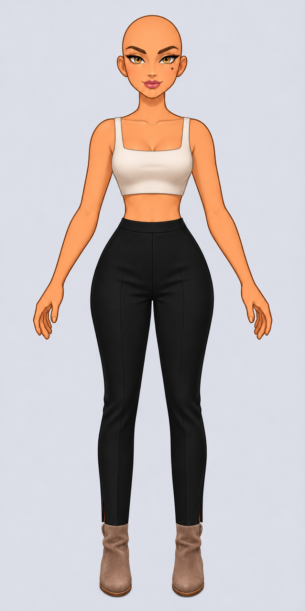
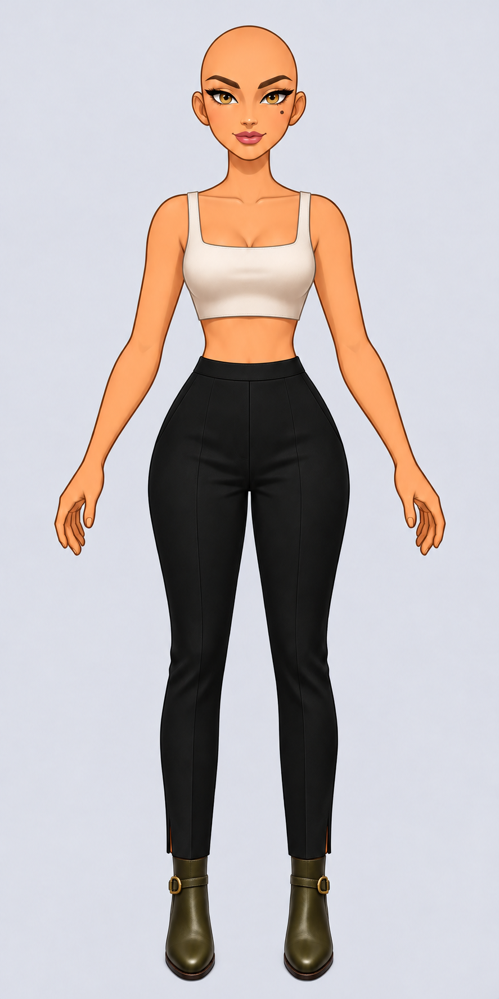
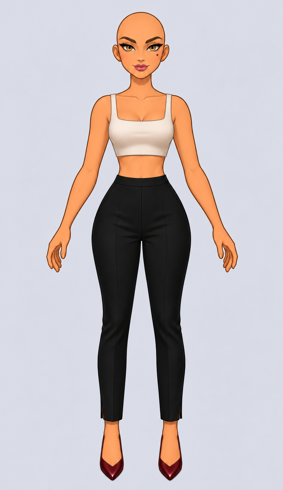
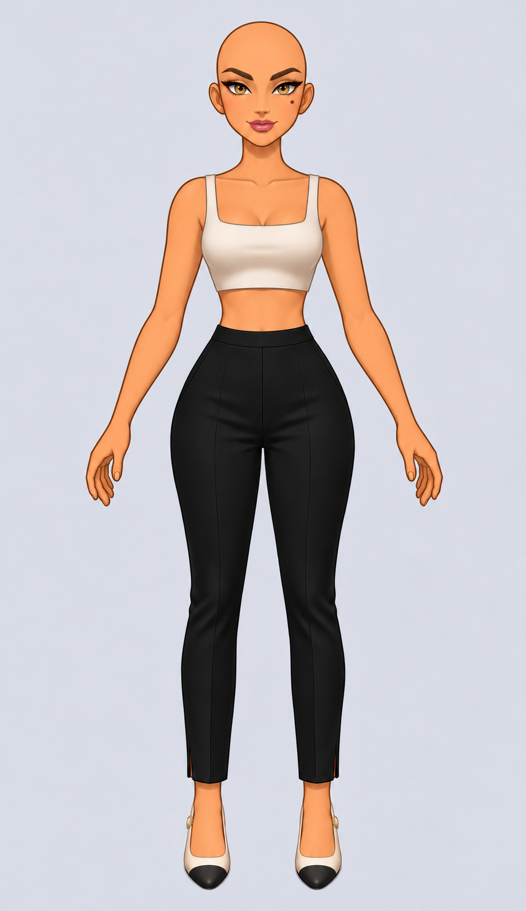
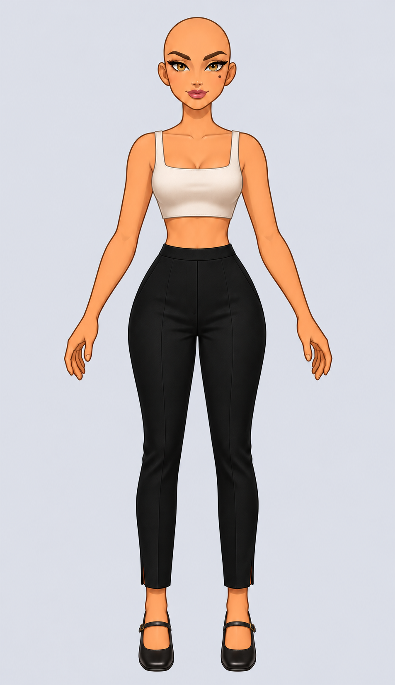

01 Piste
Basket rétro basse
Daim bleu glacier, lacets crème et semelle fine couleur miel.
Un petit monde · Atelier d’Iris
Vues de face et gros plans. Clique sur une paire pour ouvrir l’essayage en pleine résolution.

Basket rétro basse
Daim bleu glacier, lacets crème et semelle fine couleur miel.

Running Y2K
Mesh gris perle, renforts argentés et semelle sculptée.

Basket ballerine
Satin rose poudré, brides élastiques croisées et semelle souple.

Basket de court
Cuir écru, empiècements vert sapin et semelle cousue.

Chelsea crantée
Cuir noir mat, élastiques ton sur ton et semelle crantée.

Bottine souple en daim
Daim taupe, tige souple et bout amande.

Bottine équestre
Cuir olive, bride fine et boucle en laiton vieilli.

Escarpin classique
Cuir grenat, bout pointu et décolleté en V.

Slingback
Cuir ivoire, bout noir et bride arrière fine.

Babies à talon bloc
Cuir noir verni, bout rond et fine bride à boucle dorée.